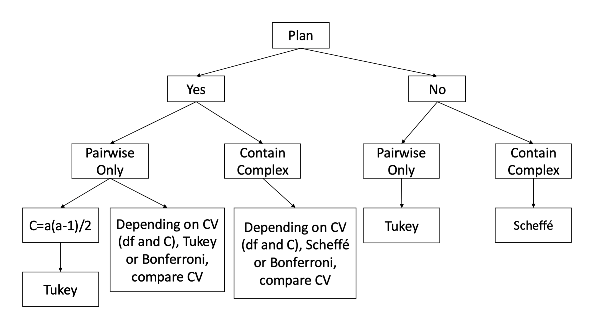

Type I Error Correction: Multiple Comparison Procedures
Introduction
In the previous lesson, we covered how to formulate and test contrasts after a significant omnibus ANOVA. But we left something important unaddressed: what happens when you run many of those tests? Initially, this might not be seen as a concern, however this is a very important aspect of psychological research. Each test you run has a chance of producing a false positive, and the more tests you run, the more that risk compounds. If you carelessly start running a bunch of tests, you will eventually get a Type I error. This fact is inevitable and enescapable.
Think about it this way, imagine standing in front of a mirror and inspecting yourself for flaws. Even if you are a perfectly healthy and beautiful human being, the longer and more carefully you look, the more likely you are to notice something like a blemish, an asymmetry, or a hair out of place. None of these might mean anything, but the sheer act of repeated searching guarantees you will eventually land on something that looks wrong, and this will cause your self esteem to plummet, even if the “flaw” was never a big deal! The more you are looking for personal flaws, the more you are going to find one regardless of how insignificant they are.
Type I error inflation works the same way. Each additional significance test is another pass in the mirror, and the more passes you take, the more likely you are to flag something as a “real” finding purely by chance.
This lesson is about how to keep that risk of finding false results under control.
We will continue with the hypertension dataset from the previous lesson: four treatment groups (drug therapy, biofeedback, dietary modification, and a combination treatment), with blood pressure as the dependent variable. The combination treatment group had the lowest mean (\(\bar{X} = 83\)), while the other three groups had means of 91.4, 93, and 92 respectively.
1. The Multiple Comparisons Problem
Why Running Many Tests Is Dangerous
When you reject the null hypothesis at \(\alpha = .05\), you are accepting a 5% chance that you are wrong — that the effect you found is a false positive, also called a Type I error. That 5% risk is manageable for a single test.
The problem arises when you run many tests at once. Each individual test has its own 5% chance of a false positive, and these chances accumulate. With enough tests, it becomes nearly inevitable that at least one of your results will be a false positive, even if nothing is truly significant.
We distinguish two kinds of error rates:
- Per-comparison error rate (\(\alpha_{PC}\)): the false positive rate for a single test, the one you set directly (e.g., .05).
- Experimentwise error rate (\(\alpha_{EW}\)): the probability of making at least one Type I error across the entire set of tests you are running.
For a set of orthogonal contrasts, the experimentwise error rate is:
\[\alpha_{EW} = 1 - (1 - \alpha_{PC})^C\]
where \(C\) is the number of comparisons being made. With just 3 comparisons at \(\alpha = .05\):
\[\alpha_{EW} = 1 - (1 - .05)^3 = 1 - (.95)^3 \approx .143\]
So your real Type I error rate is already 14%, not 5%. With 10 comparisons it climbs to about 40%. You are no longer doing science at \(\alpha = .05\) — you are just conducting a lottery.
Planned vs. Post Hoc Comparisons
An important distinction for choosing how to control Type I error is whether your comparisons were planned or post hoc.
A planned contrast is one you decided to test before looking at the data, based on your theoretical hypotheses. You committed to it in advance.
A post hoc contrast is one you decided to test after examining the data — for example, after noticing that two particular group means look far apart.
This distinction matters more than it might seem. Suppose you run a four-group study and after seeing the results you decide to test the largest-looking mean difference. It feels like you are only running one test. But in reality, you implicitly scanned all possible pairwise differences before choosing that one. The comparison that “caught your eye” is almost by definition the most extreme one in the data, which means it is also the one most likely to be a false positive. You did not really run one test — you ran all of them mentally and selected the winner.
This means that the number of comparisons you must account for is not just the ones you formally tested, but the entire family of comparisons that your selection process implicitly considered.
2. Which Correction to Use?
There is no single universal correction for Type I error inflation. The right choice depends on two things: (1) whether your comparisons were planned or post hoc, and (2) whether your comparisons are pairwise only, or include complex comparisons.
The decision tree below summarizes the recommendations:

The three most common procedures are Bonferroni, Tukey, and Scheffé. We will cover each in turn, using the hypertension dataset to illustrate.
3. Bonferroni Correction
The Logic
Bonferroni is the simplest approach. If you are running \(C\) tests and want your overall experimentwise error rate to be \(\alpha_{EW} = .05\), you just divide your significance threshold by \(C\):
\[\alpha_{Bonferroni} = \frac{\alpha_{EW}}{C} = \frac{.05}{C}\]
Each individual comparison must then have \(p < \alpha_{Bonferroni}\) to be declared significant. For example, if you plan 3 comparisons:
\[\alpha_{Bonferroni} = \frac{.05}{3} = .0167\]
This is conservative — by making each individual test harder to reject, the probability of any of them being a false positive is held at or below .05. It is a blunt instrument but it always works, as long as you can specify \(C\) in advance.
Setting C
Deciding what \(C\) should be is where researchers sometimes go wrong. The rule is: \(C\) must reflect the number of comparisons that were realistically considered, not just the ones you formally ran.
- If you planned a specific set of \(C\) comparisons before data collection, \(C\) is that number.
- If you want to test all pairwise comparisons (or if your original plan was all pairwise but you ended up testing fewer), \(C\) must be set to \(\frac{a(a-1)}{2}\), where \(a\) is the number of groups.
- If you intended to test a subset of pairwise comparisons but then tested additional ones after seeing the data, again \(C = \frac{a(a-1)}{2}\).
The key principle: if you let the data influence which comparisons you run, your \(C\) expands to cover all comparisons that could have been selected.
The Test Statistic and Critical Value
The F statistic and confidence interval formulas for Bonferroni contrasts are identical to those from the Contrasts lesson — nothing changes there. What changes is the critical value you compare your F statistic to. Under the Bonferroni correction with equal variances:
\[CV = F_{\alpha/C;\; 1,\; df_{error}}\]
The confidence interval formula is:
\[\hat{\psi} \pm CV \sqrt{MS_W \sum_{j=1}^{a} \left(\frac{c_j^2}{n_j}\right)}\]
where \(CV = \sqrt{F_{\alpha/C;\; 1,\; df_{error}}}\).
When variances are unequal, the same CV applies but the F statistic and CI use group-specific variances \(s_j^2\) in place of the pooled \(MS_W\), with adjusted degrees of freedom (the Welch-style correction from the Contrasts lesson).
Advantage and Limitation
The main advantage of Bonferroni is its simplicity and flexibility — it works for any set of contrasts, pairwise or complex, planned or post hoc (as long as \(C\) is finite and specifiable).
The limitation is power. As \(C\) grows, each individual threshold becomes more and more stringent, making it harder to detect real effects. For a small number of planned comparisons, Bonferroni is excellent. For a large number, or for post hoc complex comparisons where \(C\) is theoretically infinite, it breaks down.
4. Tukey’s HSD
The Logic
Tukey’s Honestly Significant Difference (HSD) procedure is designed specifically for all pairwise comparisons. Rather than dividing alpha by \(C\), Tukey uses a different statistical distribution — the studentized range distribution — to set a single critical value that simultaneously controls the familywise error rate across all \(\frac{a(a-1)}{2}\) pairwise comparisons.
The core intuition is this: if you are going to run all pairwise comparisons, the most dangerous one — the one most likely to be a false positive — is the comparison between the largest and smallest group means. Tukey asks: how large can the range between the maximum and minimum group means get just by chance, assuming all population means are actually equal? It uses the sampling distribution of this worst-case difference to set a threshold, then applies that same threshold to all pairwise comparisons.
Formally, Tukey computes a \(q\) statistic for a pairwise comparison between groups \(g\) and \(h\):
\[q = \frac{\bar{Y}_g - \bar{Y}_h}{\sqrt{MS_W / n}}\]
The maximum \(q\) across all pairs, \(q_{max}\), follows the studentized range distribution with parameters \(a\) (number of groups) and \(df_{error}\). From that distribution you find the critical value \(q_{CV}\), which can be converted to a critical F value:
\[F_{CV} = \frac{q_{CV}^2}{2}\]
Test Equations
Assuming equal variances, the Tukey F statistic for the pairwise comparison between groups \(g\) and \(h\) is:
\[F_\psi = \frac{n_g n_h (\bar{Y}_g - \bar{Y}_h)^2}{(n_g + n_h) MS_W}\]
and the confidence interval is:
\[(\bar{Y}_g - \bar{Y}_h) \pm \frac{q_{CV}}{\sqrt{2}} \sqrt{MS_W \left(\frac{1}{n_g} + \frac{1}{n_h}\right)}\]
The critical value \(q_{CV}\) is looked up from a studentized range table using the number of groups \(a\) and \(df_{error}\). Note that Tukey requires equal variances — if that assumption is violated, Tukey is not appropriate.
Tukey vs. Bonferroni for Pairwise Comparisons
When you plan to test all pairwise comparisons, both Tukey and Bonferroni (with \(C = \frac{a(a-1)}{2}\)) control the familywise error rate at .05. However, Tukey is more powerful in this situation, because its critical value is optimized for the structure of pairwise comparisons while Bonferroni is a general-purpose correction. The advantage grows as the number of groups increases:
| Groups | Comparisons | Tukey CV | Bonferroni CV |
|---|---|---|---|
| 2 | 1 | 4.75 | 4.75 |
| 3 | 3 | 7.12 | 7.73 |
| 4 | 6 | 8.81 | 9.92 |
| 5 | 10 | 10.16 | 11.76 |
| 6 | 15 | 11.28 | 13.32 |
(Critical F values shown for \(df_{error} = 12\), \(\alpha = .05\).)
As the table shows, Tukey’s critical value stays lower than Bonferroni’s as more groups are added, meaning it is easier to reject the null with Tukey. When the number of pairwise comparisons is small (e.g., just 2 groups), they are equivalent.
Rule of thumb: when all pairwise comparisons are of interest, Tukey is preferred over Bonferroni.
An Important Limitation
Tukey cannot be run through MANOVA in SPSS. It must be done through the ONEWAY procedure. This means that for more complex designs (within-subjects, split-plot, etc.), Tukey is generally not available unless you are willing to compute it by hand.
5. Scheffé’s Method
The Logic
Scheffé is designed for post hoc complex comparisons — the situation where you decide which contrasts to test only after examining the data, and your contrasts may include complex (non-pairwise) comparisons.
In this situation, Bonferroni does not apply because \(C\) is not defined — you did not select a pre-specified set of contrasts. And Tukey does not apply because Tukey only handles pairwise differences. Scheffé handles the general case.
The key insight behind Scheffé is that, in a post hoc setting, you are implicitly searching across all possible contrasts — not just pairwise ones, but any weighted combination of group means. Among all possible contrasts, one of them will necessarily have the largest \(SS_\psi\) — the largest contrast sum of squares. Scheffé identifies what the maximum \(F\) statistic could be under this worst-case selection and uses that as the critical value.
It turns out that the worst-case contrast can capture at most all of the between-groups sum of squares, \(SS_B\). Since the omnibus F statistic is \(F_{omnibus} = SS_B / [(a-1) \cdot MS_W]\), the maximum possible contrast F is:
\[F_{max} = (a - 1) \cdot F_{omnibus}\]
This leads directly to Scheffé’s critical value:
\[CV_{Scheffé} = (a - 1) \cdot F_{.05;\; a-1,\; N-a}\]
This is a fixed value that depends only on the number of groups and the error degrees of freedom — it does not change regardless of how many contrasts you test. That is what makes Scheffé appropriate for post hoc work: you do not need to pre-specify \(C\).
Test Equations
Assuming equal variances, the F statistic is identical to the standard contrast F:
\[F_\psi = \frac{(\hat{\psi})^2}{\left[MS_W \sum_{j=1}^{a} \left(\frac{c_j^2}{n_j}\right)\right]}\]
The confidence interval is:
\[\hat{\psi} \pm \sqrt{(a-1) F_{.05;\; a-1,\; N-a}} \cdot \sqrt{MS_W \sum_{j=1}^{a} \left(\frac{c_j^2}{n_j}\right)}\]
You compare the calculated \(F_\psi\) to \((a-1) F_{.05;\; a-1,\; N-a}\). If \(F_\psi\) exceeds the critical value, the contrast is significant.
Important: Scheffé requires equal variances. If heterogeneity of variance is present, Scheffé is not appropriate.
The Omnibus Connection
There is a useful and elegant link between Scheffé and the omnibus ANOVA: if and only if the omnibus F test is significant, at least one contrast will be significant by Scheffé’s method. Conversely, if the omnibus test is non-significant, Scheffé cannot produce any significant contrasts. This means that if your omnibus ANOVA is non-significant, you can skip Scheffé entirely — you already know the answer.
Scheffé vs. Bonferroni: When to Use Which
Both Scheffé and Bonferroni can be used for planned complex comparisons. The question is which one gives you more power (i.e., lower critical value) for your specific situation. The answer depends on how many comparisons you are making:
| C (# Comparisons) | Bonferroni CV | Scheffé CV |
|---|---|---|
| 1 | 4.17 | 8.76 |
| 2 | 5.57 | 8.76 |
| 3 | 6.45 | 8.76 |
| 4 | 7.08 | 8.76 |
| … | … | 8.76 |
| 9 | 8.94 | 8.76 |
| 10 | 9.18 | 8.76 |
(For \(a = 4\) groups, \(df_{error} = 30\).)
Bonferroni’s critical value increases with \(C\), while Scheffé’s stays fixed. They cross over at around 8 comparisons. So:
- For a small number of planned comparisons, Bonferroni has more power and should be preferred.
- For a large number of comparisons or post hoc complex contrasts, Scheffé is preferred (and may be the only valid option).
- Scheffé should not be used unless at least one comparison is complex. For pairwise-only post hoc comparisons, use Tukey.
6. Implementing MCPs in SPSS
Pairwise Comparisons with ONEWAY
The easiest way to run all three procedures for all pairwise comparisons is via the ONEWAY command. Just add a /posthoc= line:
ONEWAY pressure BY treat
/statistics descriptives
/posthoc=tukey scheffe bonferroni.This produces a “Multiple Comparisons” table in the output that lists every pairwise mean difference for each correction method, along with its standard error, adjusted \(p\) value, and 95% confidence interval. The output is easy to read and directly interpretable.

In the output, each row shows a pair of groups (I) and (J), the mean difference (I–J), the standard error, the adjusted significance value, and the 95% CI. For Tukey and Bonferroni, you can use the \(p\) values directly — they are adjusted. For Scheffé in pairwise mode, the \(p\) values are also valid here since ONEWAY computes them correctly.
This syntax works well when your goal is all pairwise comparisons. However, if you want to test specific planned contrasts or complex comparisons, you need to use MANOVA with the /cinterval line instead.
Note: ONEWAY cannot do within-subjects or factorial designs. For those, you will always need MANOVA.
Bonferroni with MANOVA
To apply a Bonferroni correction to specific planned contrasts in MANOVA, you use the /cinterval=individual(#) line. The # is the confidence level for each individual interval, calculated as:
\[\# = 1 - \frac{\alpha}{C} = 1 - \frac{.05}{C}\]
For our hypertension example, suppose you planned the following 3 contrasts before data collection:
- Drug therapy & biofeedback & diet vs. combination (\(\psi_1\))
- Drug therapy & biofeedback vs. diet & combination (\(\psi_2\))
- Drug therapy vs. biofeedback (\(\psi_3\))
With \(C = 3\):
\[\# = 1 - \frac{.05}{3} = 1 - .0167 = .9833\]
The SPSS syntax is:
MANOVA pressure BY treat (1 4)
/print=cellinfo(means)
/error=within
/cinterval =individual(.9833)
/contrast(treat) = special (1 1 1 1
1 1 1 -3
.5 .5 -.5 -.5
1 -1 0 0)
/design = treat(1) treat(2) treat(3).The number .9833 tells SPSS to construct a 98.33% confidence interval for each individual contrast. This is what makes the family-wise error rate .05 across 3 contrasts: each comparison gets a stricter interval than the usual 95%.
To assess significance, compare each \(p\) value in the output to your corrected \(\alpha = .05/C = .0167\). If \(p < .0167\), the contrast is significant under Bonferroni.

The output shows the Coeff. (your \(\hat{\psi}\)), Std. Err., t-Value, Sig. t (the \(p\) value), and the lower and upper bounds of the confidence interval. Compare each \(p\) value to \(\alpha/C\). Note that the confidence intervals printed reflect the Bonferroni-corrected width.
To get the F statistic from this output: square the \(t\)-Value. So \(t^2 = F\).
If you plan to test 4 comparisons (across one or two MANOVA calls), the corrected confidence level would be \(1 - (.05/4) = .9875\), regardless of how many contrasts appear in each individual MANOVA call.
Scheffé with MANOVA
To apply a Scheffé correction in MANOVA, change the /cinterval line to use the joint and univariate Scheffé specification:
MANOVA pressure BY treat (1 4)
/print=cellinfo(means)
/error=within
/cinterval = joint(.95) univariate(scheffe)
/contrast(treat) = special (1 1 1 1
1 1 1 -3
.5 .5 -.5 -.5
1 -1 0 0)
/design = treat.Two things have changed from the Bonferroni syntax:
The /cinterval line now uses joint(.95) univariate(scheffe). joint(.95) keeps the family-wise error rate at .05 across all contrasts tested together. univariate(scheffe) specifies the Scheffé method for each individual contrast interval.
The /design line has changed from treat(1) treat(2) treat(3) to simply treat. This is critical. MANOVA uses the /design line not only to specify what goes in the model, but also to define what constitutes a family of tests. If you leave it as treat(1) treat(2) treat(3), MANOVA treats each contrast as its own separate family, which sets \(\alpha_{PC} = .05\) for each one individually — defeating the purpose of the correction. Writing /design = treat. tells MANOVA to treat all contrasts together as a single family, so the correction applies across all of them jointly.

Critical warning about the Scheffé output: The \(p\) values in the Scheffé MANOVA output are not corrected. Do not use them for significance testing. SPSS provides the Scheffé-corrected confidence intervals and the \(t\) statistics (which you square to get \(F\)), but the printed \(p\) values are the ordinary uncorrected ones. To assess significance with Scheffé, you must either:
- Compare the calculated \(F_\psi = t^2\) to the Scheffé critical value \((a-1) F_{.05;\; a-1,\; N-a}\), or
- Check whether the Scheffé confidence interval excludes zero.
For our hypertension example with \(a = 4\) groups and \(df_{error} = 16\) (since \(n = 5\) per group, \(N = 20\)), the Scheffé critical value is:
\[CV_{Scheffé} = (4-1) \times F_{.05;\; 3,\; 16} = 3 \times 3.24 = 9.72\]
Any contrast F statistic must exceed 9.72 to be declared significant.
7. Summary: Choosing Your MCP
The choice of correction method comes down to your research context:
| Situation | Recommended Procedure |
|---|---|
| Small set of planned contrasts (pairwise or complex) | Bonferroni |
| All pairwise comparisons planned or post hoc | Tukey |
| Post hoc complex comparisons | Scheffé |
| Planned contrasts with many comparisons | Compare Bonferroni and Scheffé CVs; use the lower one |
A few additional reminders:
- Tukey and Scheffé require equal variances. If the homogeneity of variance assumption is violated, use Bonferroni (which can accommodate heterogeneous variances via the unequal variance formulas).
- Tukey cannot be implemented via MANOVA in SPSS; use
ONEWAYfor Tukey. - For Scheffé in MANOVA, always use
/design = treat.(not the individual contrast design) to ensure the correction applies family-wide. - For Scheffé, never use the output \(p\) values — only use the \(F\) statistic vs. the critical value or the confidence intervals.
- If the omnibus ANOVA is non-significant, Scheffé will never find a significant contrast. You can skip it.
Discussion Questions
Q1. Using the hypertension data, a researcher runs all 6 pairwise comparisons after looking at the data and seeing that groups 1 and 4 look particularly different. What should \(C\) be set to, and why? Which method would you recommend?
Q2. A researcher plans 3 contrasts before data collection: one complex and two pairwise. Which correction method(s) are appropriate? What would you need to compare to decide between them?
Q3. Explain in your own words why the \(p\) values in the MANOVA Scheffé output cannot be used for significance testing. What can you use instead?
Q4. Without using \(p\) values, how can you assess whether a contrast is significant? Use a worked example from the ONEWAY output above to illustrate.
Q5. Using the decision tree, classify each of the following scenarios and identify the appropriate MCP:
- 4 groups; all 6 pairwise comparisons; planned in advance.
- 4 groups; 3 planned complex contrasts.
- 4 groups; 2 pairwise and 1 complex; decided after looking at the data.
- 4 groups; all pairwise; decided after looking at the data.
Q6. Suppose you have 4 groups and \(df_{error} = 30\). You are planning 4 complex comparisons. Looking at the Bonferroni vs. Scheffé critical value table, which method should you choose? At what number of comparisons does your answer change?
Well Done!
You have completed the Multiple Comparisons lesson. Here is a summary of what was covered:
- How running multiple tests inflates the experimentwise Type I error rate
- The distinction between per-comparison and experimentwise error rates, and the formula \(\alpha_{EW} = 1 - (1 - \alpha)^C\)
- The difference between planned and post hoc comparisons, and why post hoc selection inflates \(C\)
- The three main correction procedures: Bonferroni (flexible, best for small planned sets), Tukey (best for all pairwise), and Scheffé (best for post hoc complex comparisons)
- How to implement each in SPSS using
ONEWAY(for Tukey and simple pairwise) andMANOVA(for Bonferroni with/cinterval=individual(#)and Scheffé with/cinterval=joint(.95) univariate(scheffe)) - The critical gotcha for Scheffé: never use the output \(p\) values; use the \(F\) statistic vs. the critical value or the confidence intervals
- The link between Scheffé and the omnibus F test